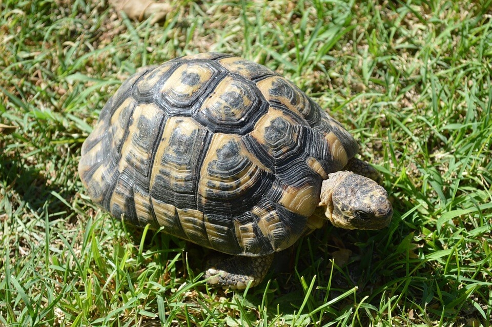
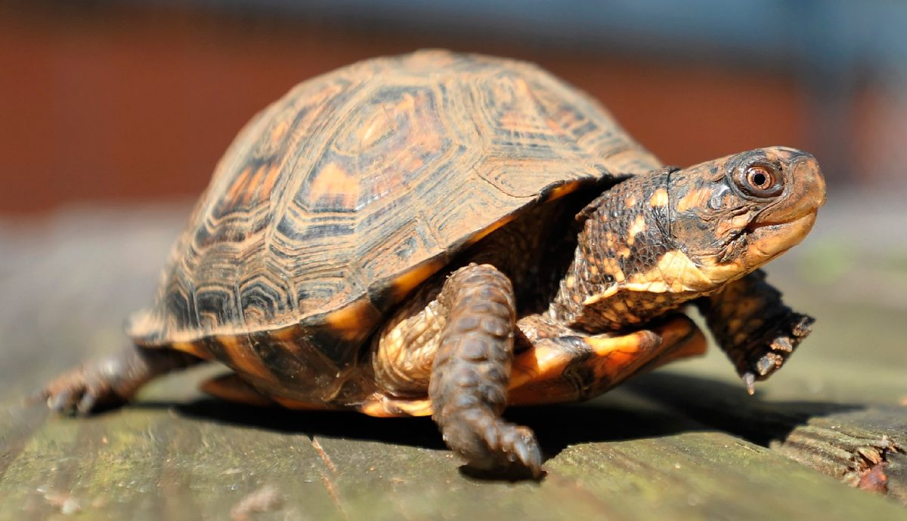
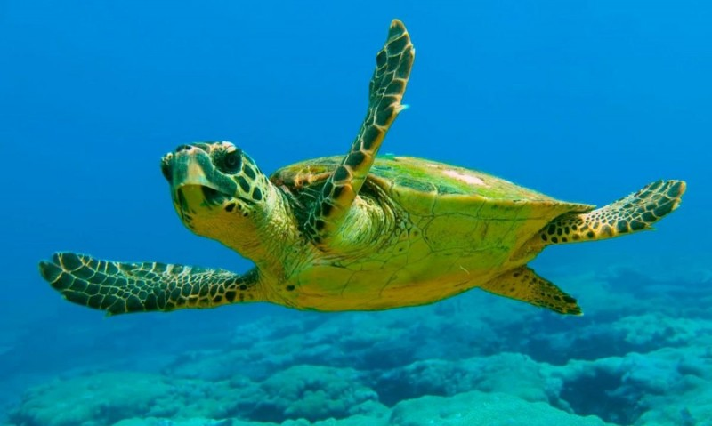
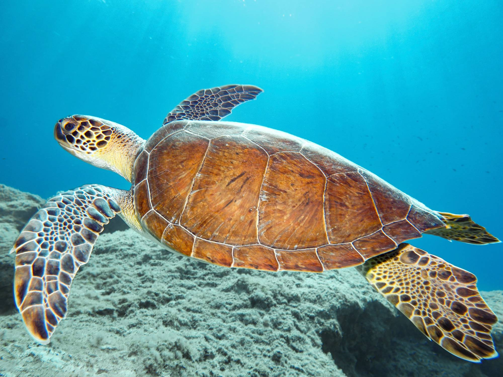
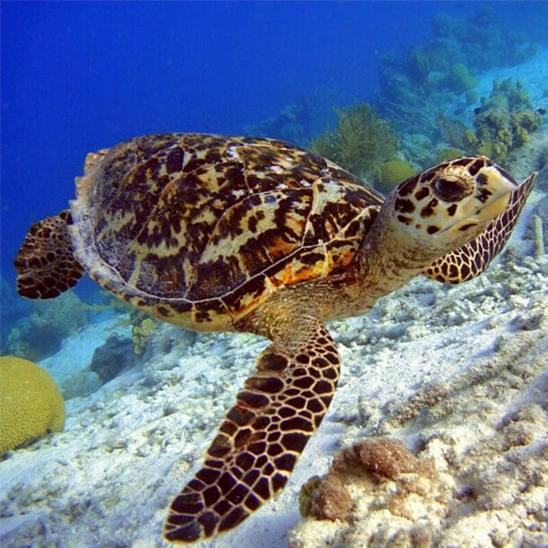

Los cazadores veloces
Los escamosos o también llamados Squamata, son un orden de reptiles diápsidos (presentan dos huecos tras las cuencas oculares) que incluye a los lagartos, los camaleones, las iguanas y formas afines, las serpientes y las culebrillas ciegas. Evolutivamente, es el orden más reciente de reptiles. Son también los reptiles actuales que han alcanzado mayor éxito ecológico y los que más especies incluye, con casi 8000.Mas información
Lagartos

Lagarto verde
A

Lagartija común
A

Lagarto ocelado
A

Anolis verde
A
Iguanas

Iguana verde
A

Iguana marina
A

Iguana de roca
A

Iguana azul
A